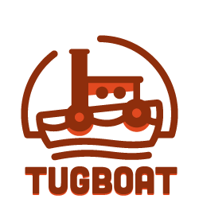
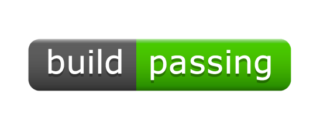
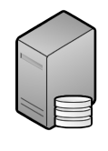
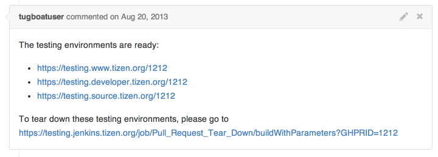
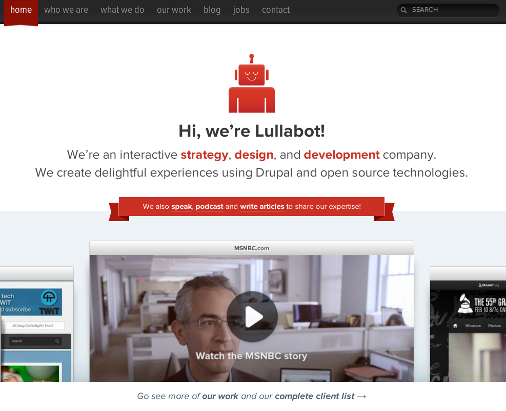

Tugboat

give your bug fixes a URL.


This is not a UI


Enter Tugboat
First
a little bit of history
- Production

- Staging
- Development
hook_update_N()
Features
Configuration
Management
Initiative

(this isn't really a UI either)

resemble.js
Setting this up for yourself
Welcome To
The Future